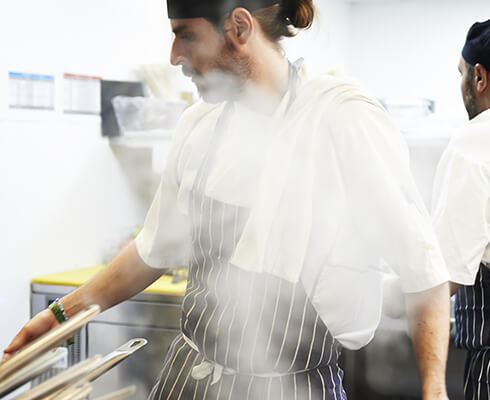
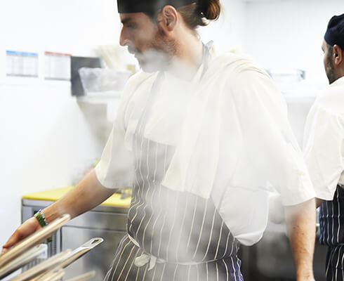

About
Coppa Club is a place for eating, drinking, meeting and unwinding.
Built around a central, brass bar that’s open on all-sides, Coppa Club has a raised lounge for working and winding down, a 250-cover restaurant with a marble herringbone floor, and a café with booths and a fireplace. Outside, there’s a large, south-facing terrace that catches the sun all day. All our seating is designed to make the most of our view over the river.
Our menu focuses on thoughtful, unfussy, European food from small plates and snacks to grilled mains, sourdough pizzas and healthy salads. There's a wide selection of breakfast and brunch dishes and the bar serves carefully-chosen wines, beers and classic cocktails as well as new creations.
We are open from early morning until late at night, seven days a week.
Drop in for breakfast and stay for dinner. No-one outstays their welcome.
Coppa Club, 3 Three Quays Walk,
Lower Thames Street, London, EC3R 6AH
020 7993 3827

Menus
We start early, with a breakfast menu including juices, pastries, pancakes, all kinds of eggs and freshly-roasted coffee. At 11.30am, we switch to our all-day menu.
On weekends we serve brunch until 4pm.
Sign up
If you would like regular updates on Coppa Club events and launches, sign up to our newsletter.

Location
Directions
Coppa Club, 3 Three Quays Walk,
Lower Thames Street,
London, EC3R 6AH
Monday to Thursday 7.30am – 11pm
Friday 7.30am – 12am
Saturday 9am – 12am
Sunday 9am – 10.30pm
Food served
Monday to Saturday until 11pm
Sunday until 10pm
020 7993 3827
towerbridge@coppaclub.co.uk
Join us
Like what we do? Come and work for us…
We're looking for bright, motivated people to join our team.
recruitment@coppaclub.co.uk

 

Follow us on...